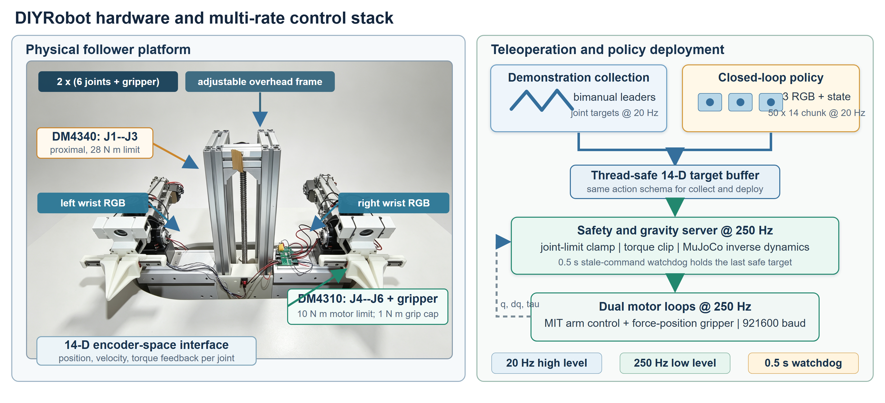

HiArm lower host
Set up and deploy on the real robot
This guide is derived from a read-only audit of the active HiArm source. It documents the observed contracts and safety gates; it does not claim that the robot was powered, calibrated, or moved during the audit.
Assign physical authority before powering anything
One person must own the emergency stop or power disconnect. Another may operate the terminal. Both must agree on the planned joint set, duration, workspace, and stop signal before torque is enabled.
- Clear people, loose cables, tools, and objects from the swept volume.
- Support the arms if an unexpected torque release could cause impact.
- Place leader and follower near the recorded safe startup pose.
- Confirm the emergency stop or power disconnect is reachable without entering the workspace.
- Begin with software-only checks and progress one gate at a time.
Do not run motor scans, calibration capture, teleoperation, recording, or policy motion merely to “see what happens.” Several tools briefly enable torque to obtain feedback even when they are described as probes.
Wire the observed hardware topology

| Subsystem | Observed hardware | Addressing |
|---|---|---|
| Leader arms | 14 Feetech STS3215 servos on USB serial | Left IDs 1-7; right IDs 8-14 |
| Follower arms | 14 RobStride O3-class joints on official CH340 USB-CAN AT transport | Left IDs 1-7; right IDs 11-17 |
| Mobile base | Three Damiao wheel motors | 0x21 left, 0x22 back, 0x23 right |
| Lift | One Damiao motor plus serial limit sensors | Motor 0x24; ESP32 limit reader |
| Vision | Logitech C930e, Logitech C920, ARKMICRO camera | Right gripper, left gripper, overhead |
The generic HiArm robot class exposes one follower port plus chassis/lift. The current strict teleop, recorder, and policy client use separate left and right follower ports. Follow the active launcher used for the experiment; do not combine these port models.
Install the lower-host software without changing hardware state
Use the validated LeRobot/HiArm checkout supplied with the platform. The real-robot source is not copied into this KinRT package. Create an isolated environment and install the lower-host OpenPI client used to communicate with the GPU server.
cd /path/to/lerobot
python3 -m venv /opt/hiarm_env
/opt/hiarm_env/bin/pip install -e .
/opt/hiarm_env/bin/pip install -e /path/to/KinRT/policy/pi05/packages/openpi-client
cd src/lerobot/robots/hi_arm
OFFLINE_SELF_TEST=1 ./start_hiarm_pi05_policy_client.shAdapt the interpreter path in the launchers to the actual environment only in a reviewed deployment copy. The audited host used a dedicated hiarm_env and absolute paths.
The expected output includes 14 motors, action shape (1, 14), and explicit statements that no cameras or serial/CAN devices were opened.
Discover stable device paths
USB topology changes can alter numeric device names. Prefer /dev/serial/by-path and /dev/v4l/by-id. Record the resolved mapping at the start of every collection or evaluation session.
ls -l /dev/serial/by-path
ls -l /dev/v4l/by-id
lsusb
# Confirm that expected paths exist without opening them.
test -e /dev/serial/by-path/<leader-device>
test -e /dev/serial/by-path/<left-follower-device>
test -e /dev/serial/by-path/<right-follower-device>| Logical name | What to identify | Do not assume |
|---|---|---|
| Leader | Feetech serial controller | A prior USB topology suffix |
| Left follower | RobStride CH340 adapter for IDs 1-7 | That it shares the right bus |
| Right follower | RobStride CH340 adapter for IDs 11-17 | That reconnecting preserves the same symlink |
| Chassis/lift | Damiao USB-CAN device | That it is used by the arm-only recorder |
| Limit reader | ESP32 serial device | That stale limit state is safe |
The RobStride adapter uses an AT-style serial envelope, not SocketCAN or Lawicel/SLCAN. Do not attach a generic CAN tool to the device without confirming the transport.
Calibrate in a fail-closed sequence
The active strict path depends on leader calibration, follower rest/range calibration, and LeRobot-compatible direction/validation data. Treat calibration files as hardware-specific controlled artifacts.
| Artifact | Purpose |
|---|---|
leader_calibration.json | Leader encoder and mapping reference |
hiarm_rest_range_calibration.json | Follower startup rest pose and safe absolute ranges |
hiarm_lerobot_calibration.json | Direction, homing/range compatibility, gains, and teleop validation |
teleop_session_zero.json | Historical relative-zero compatibility; not the preferred primary map |
Read current coverage
PYTHONPATH=/path/to/lerobot/src /opt/hiarm_env/bin/python \
./hiarm_rest_range_calibrate.py show
PYTHONPATH=/path/to/lerobot/src /opt/hiarm_env/bin/python \
./hiarm_lerobot_calibrate.py showValidate one joint at a time
- Place leader and follower at the intended safe rest pose and record only the selected joint if a correction is required.
- Passively move that follower through a conservative safe range. Do not force a mechanical stop.
- Confirm direction with a tiny, supervised physical test.
- Mark the joint validated only after the direction and range are physically confirmed.
- Repeat until every selected joint has rest, range, direction, and teleop validation.
Whole-arm “middle,” “zero,” “rotation,” and “rest” snapshots do not prove per-joint direction, wrap continuity, or safe limits. The active safety path requires per-joint evidence.
Validate all three camera views
Use the three-camera preview only when the recorder is stopped. The capture path and inference path intentionally use different logical names.
| Physical view | Capture key | Current inference key |
|---|---|---|
| Overhead/high | overhead | cam_high |
| Left gripper/wrist | left_gripper | cam_left_wrist |
| Right gripper/wrist | right_gripper | cam_right_wrist |
cd /path/to/lerobot/src/lerobot/robots/hi_arm
./start_hiarm_three_camera_webui.sh
# Stop the preview before recording; camera devices cannot be shared safely.Check orientation, exposure, focus, occlusion, left/right identity, frame freshness, and whether the physical setup matches training. A technically open camera with the wrong view is a failed gate.
Collect only after preflight passes
TASK="Put the pill box into the center of the notebook." \
REPO_ID="local/hiarm_smoke" ROOT="/data/hiarm_smoke" \
EPISODES=1 EPISODE_TIME=20 RESET_TIME=0 FPS=20 \
./start_hiarm_pi05_record.shThe recorder connects separate follower buses, reads the leader, performs mandatory startup preflight, opens all cameras, clamps each target to calibrated ranges, limits per-frame motion, monitors fresh feedback, and disables follower torque in cleanup.
Keep the resolved ports, calibration digests, camera device IDs, task text, dataset root, preflight table, start time, operator, and stop reason with every collection session.
Deploy through offline, dry, and bounded gates
No camera, serial, CAN, or motor access.
Cameras and passive feedback; no motor commands.
Explicit motion flag and short duration.
Fixed protocol and physical supervision.
OFFLINE_SELF_TEST=1 ./start_hiarm_pi05_policy_client.shPOLICY_SERVER="<gpu-host>:<port>" TASK_ID=0 \
./start_hiarm_pi05_policy_client.shPOLICY_SERVER="<gpu-host>:<port>" TASK_ID=0 \
ALLOW_MOTION=1 DURATION=30 \
./start_hiarm_pi05_policy_client.shThe audited launcher defaults to a 20 Hz loop, up to 20 actions from each returned chunk, a 60-second policy timeout override, explicit startup mismatch rejection, range clamps, joint-specific step caps, and stale-feedback termination. For first physical validation, reduce action-chunk execution to one step and use a short duration.
Stop immediately on any safety signal
| Signal | Required response |
|---|---|
| Startup mismatch or failed calibration row | Do not enable motion; restore the pose or recalibrate the affected joint. |
| Unexpected direction, jerk, drift, or collision risk | Press Ctrl-C and use the physical stop or power disconnect as needed. |
| Missing or stale follower feedback | Stop, disable torque, inspect the relevant USB-CAN path and wiring. |
| Stale policy response or invalid action shape | Stop the client; validate the server config and network before retrying. |
| Camera freeze, wrong view, or device contention | Stop collection/evaluation and reacquire all three streams. |
| Limit sensor stale during lift use | Hold lift position and repair the limit-reader path before motion. |
Normal cleanup disables follower torque and closes buses. A software cleanup path is not a substitute for a physical stop when the mechanism behaves unexpectedly.